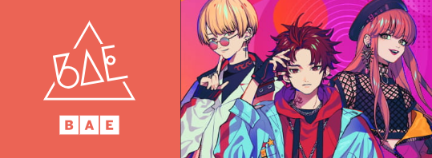

Welcome to the show!
Enjoy our music and stage!
About
什麼是Paradox Live?
《Paradox Live》是由avex × GCREST共同打造的HIPHOP跨媒體製作企劃。官方簡稱為「Paralive（パラライ）」。
角色設計是BAE由秋赤音、The Cat's Whiskers由小宮國春、cozmez由キナコ、惡漢奴等由はらだ、武雷管由スオウ所擔任。音樂製作團隊為D.O.C -Division Of Creators- (NEW WORLD PRODUCTIONS INC.)。
近未來，在HIPHOP文化呈現飽和的狀態下，全新的反動勢力「幻影Live」誕生了。Rapper們戴上含有被稱為「幻影金屬」的特殊金屬飾品，與自身的DNA產生化學反應後創造出連結感情的幻影，帶來華麗的舞台表演讓無數年輕人為之狂熱。但在其幕後，卻也必須承受「心理創傷幻影」這一令人痛苦的副作用。當中，以各自不同的音樂類型擁有超人氣自豪的4組團體「BAE」「The Cat's Whiskers」「cozmez」「惡漢奴等」收到了傳奇俱樂部「CLUB Paradox」所發出的神祕比賽『Paradox Live』的邀請函。為了證明自己的音樂才是No.1，14人決定接下戰帖展開對決。
出場的4組隊伍將採循環賽制進行舞台對決，由聽眾決定勝敗。可通過使用支持點數「dope point」為隊伍進行投票，包含購買CD亦可按照指定的支持行動獲取及累積點數，並在指定期限內以任意點數為支持的隊伍進行投票。分數較高的隊伍即可獲得勝利，而勝出最多的隊伍將成為冠軍。其勝敗推動及影響著作品的故事發展。